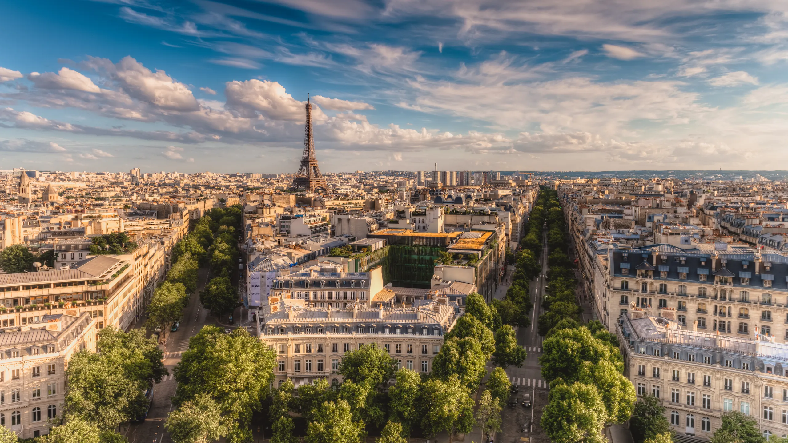

Sua Próxima Viajem:
Paris - França
PARA OS ROLEZEIROS:
Visite três destinos em Paris
Paris, a Cidade Luz, é uma metrópole histórica e culturalmente rica, onde se destacam a Torre Eiffel, as Catatumbas de Paris e o Museu do Louvre, que abriga a Mona Lisa. Fundada pelos celtas e transformada pelos Romanos, a cidade tornou-se a capital da França no século X e evoluiu para um centro de poder, arte e filosofia. Passear por Montmartre e pelos Jardins de Luxemburgo oferece uma experiência única, consolidando Paris como um símbolo de moda, gastronomia e inovação.

1. Torre Eiffel
A Torre Eiffel, um dos monumentos mais icônicos do mundo, oferece vistas panorâmicas deslumbrantes de Paris, especialmente ao pôr do sol e à noite, quando a cidade brilha intensamente. Construída para a Exposição Universal de 1889, ela simboliza a inovação e o espírito de aventura da época. Visitá-la é mergulhar na história, apreciar uma obra-prima da engenharia e, claro, desfrutar de uma experiência inesquecível no coração da Cidade Luz.
- Amantes de história e arquitetura
- Casais Românticos

2. Museu do Louvre
O Museu do Louvre, é o maior e um dos mais renomados museus do mundo, abrigando uma coleção inestimável de arte e artefatos que abrangem desde a Antiguidade até o século XXI. Visitar o Louvre é essencial para admirar obras-primas como a Mona Lisa e a Vênus de Milo, mergulhando na história da arte e da civilização. Com sua arquitetura deslumbrante, incluindo a icônica pirâmide de vidro, o Louvre não só oferece uma jornada cultural enriquecedora, mas também é uma experiência visual inesquecível no coração de Paris.
- Amantes de arte e história
- Profissionais de arte e design

3. Catatumbas de Paris
As Catacumbas de Paris são um fascinante e sombrio labirinto subterrâneo que guarda os restos mortais de mais de seis milhões de pessoas. Criadas no final do século XVIII para resolver problemas de superlotação dos cemitérios, suas passagens oferecem uma perspectiva única da história parisiense. Visitar as catacumbas é uma experiência intrigante que revela a atmosfera misteriosa e a engenharia impressionante escondida sob as movimentadas ruas da Cidade Luz.
- Amantes de história e arquitetura
- Adventuresos e exploradores
- Telespectadores de filmes de terror
As melhores coisas para fazer em Paris destacam a reputação da cidade como um epicentro global de arte, cultura e história. Frequentemente vista como a essência da França, você experimentará uma atmosfera única em termos de riqueza cultural e charme histórico, já que a cidade recebe visitantes de todo o mundo. Desde a majestosa Torre Eiffel até os corredores do Louvre e as charmosas ruas de Montmartre, Paris oferece uma experiência inesquecível e multifacetada que cativa todos que a visitam.